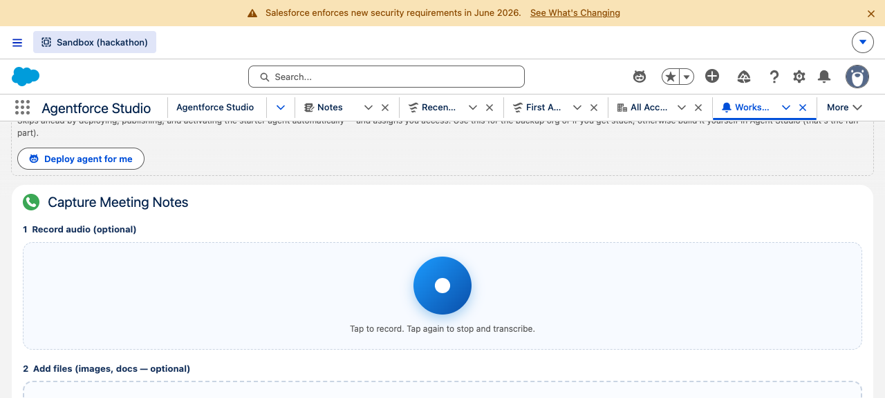
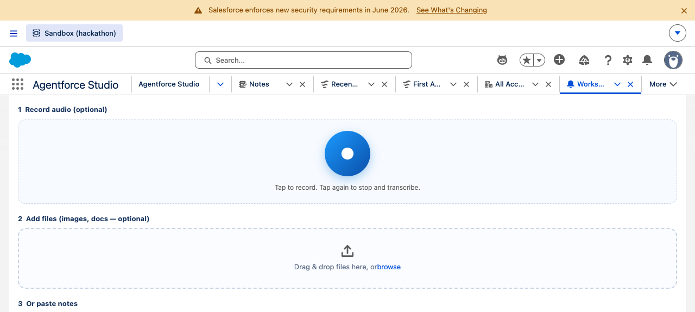
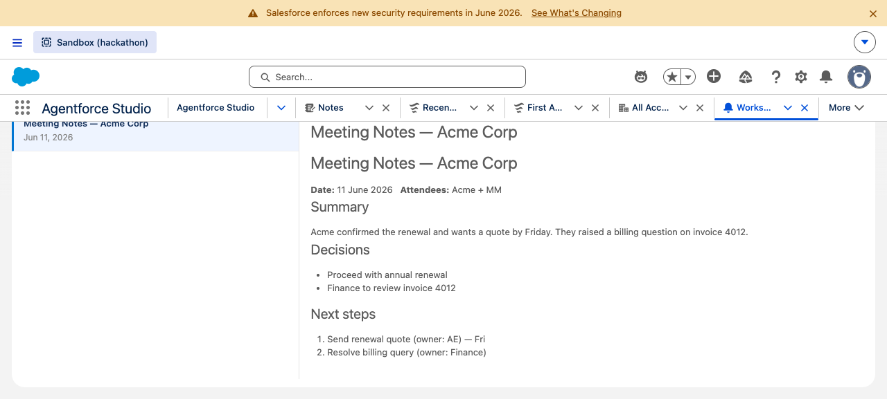
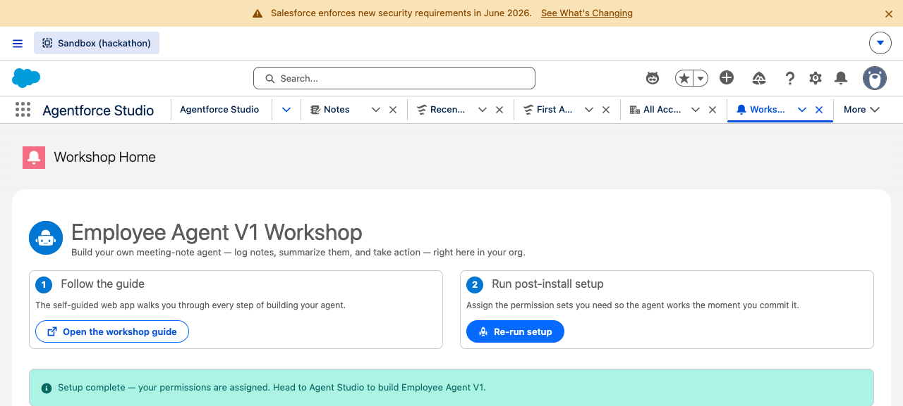

Agentforce Workshop · Component Test Report
This documents the new components requested: capturing meeting notes (audio + files + text) and sending them to an agent, creating richly-formatted HTML notes, and a read-only note viewer with PDF download. All were deployed to the sandbox and verified in the browser.
| Component | Type | What it does | Tests |
|---|---|---|---|
noteCapture | LWC | Record audio (with animation) → speech-to-text; drag in multiple files → image/doc-to-text via prompt template (parallel); paste text. Combine + send to a chosen Employee Agent (ACC API). | via controllers |
NoteCaptureController | Apex | Saves files as Salesforce Files (ContentVersion), lists Employee Agents to target. | 4/4 |
NoteCaptureAI | Apex | Speech-to-text + multimodal prompt template invocation; degrades gracefully if AI features are off. | 4/4 |
HtmlNoteService | Apex + Invocable | Creates a richly-formatted ContentNote from HTML (sanitized), links it to a record. Callable from LWC, Flow, or the agent. | 8/8 |
noteViewer + NoteViewerController | LWC + Apex | Lists notes, renders the selected note's HTML read-only, Download-PDF (print) button. | 3/3 |
Captured live from the workshop Home page in hackathon_sandbox.



HtmlNoteService — headings, bold labels, bulleted & numbered lists all render. A Download-PDF button is top-right. This proves the full round-trip: create HTML note → read it back → render formatted.
Packaging split: these four components depend on org features (ContentNote, ConnectApi.EinsteinLLM, BotDefinition) that aren't present in the vanilla scratch org the 2GP package build uses — so they don't compile there. They're kept in a separate feature-addons/ folder and deployed to the org directly (same pattern as the un-packageable agent). The core package (0.1.0.2) still builds & installs cleanly. Deploy the add-ons with sf project deploy start --source-dir feature-addons + assign the Employee_Agent_Notes_Addon perm set. See feature-addons/README.md.
Speech-to-text & prompt-template calls: the actual AI calls (the convertBase64SpeechToText action and the multimodal prompt template) require those features enabled and configured in the org. The Apex compiles and the orchestration is tested; if a feature is off, the component shows a clear "paste the text instead" placeholder rather than failing. Live AI output should be verified once the org's prompt template (Describe_File_Contents) and speech action are confirmed available.
Send-to-agent (ACC API): uses lightning/accApi (open + execute) to open the agent side panel and submit the notes. This works on Lightning desktop with Agentforce; elsewhere it falls back to a bubbling event. Worth a final manual click-through on a record page with an active agent.